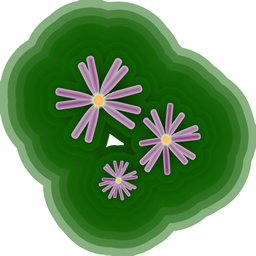

Когда по пальцам ты захочешь сосчитать
Цветы, расцветшие в желтеющих полях
Осеннею порой, —
Ты среди них найдешь
Семь зеленеющих цветущих трав!
Хаги-но хана,
Обана, кудзубана,
Надэсико-но хана,
Оминаэси,
Дальше фудзибакама,
Асагао-но хана.